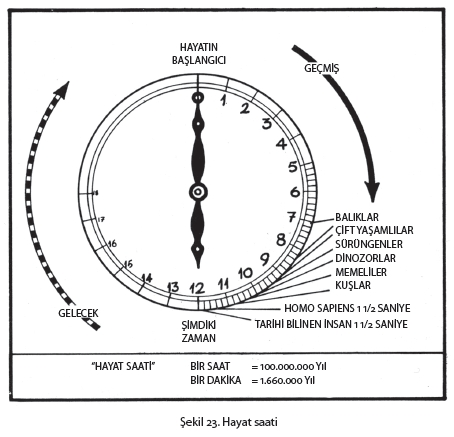
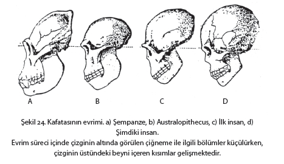
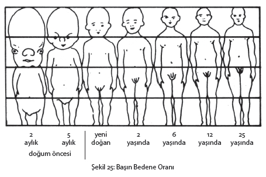
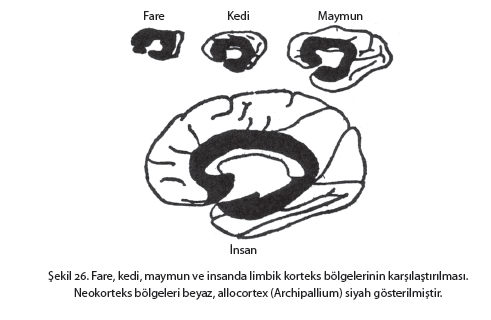
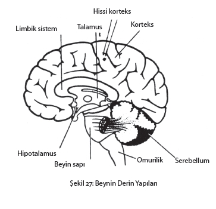

Stres kelimesi ne anlama geliyor, sorusunu iki ayrı açıdan cevaplamak gerekir. Çünkü bu kelime iki ayrı anlamda kullanılmaktadır. Bunlardan birincisi organizmanın durumudur, yani insanın tehlike içinde olduğu şartlar ve etkenler karşısında denge mekanizmalarının bozulduğu zamanki durumu. Burada stres kelimesi ile kişinin fizyolojik, biyokimyasal, psikolojik stres tepkileri anlatılır. Stres kelimesinin ifade ettiği diğer anlam ise organizmanın dengesini bozabilecek etkenlerin tümüdür. Bilim dilinde stres vericiler (stressors) olarak adlandırılan bu etkenler fiziksel (travma, sıcak, soğuk vb), psikolojik (duygusal gerilimler, iç ve dış çatışmalar, eş sorunları vb), veya sosyal (çevre faktörleri, kültürel değişim vb) içerikli olabilir.
Stres günümüzde öylesine geniş ve büyük bir başlık olmuştur ki, bazı psikologlar “stres ne değildir” sorusuna cevap arayarak stres tanımına yaklaşmaktadırlar.
Stres kavramı Batı toplumlarında da bilimsel anlamını kazanmadan, yani kullanıldığı disiplinlerde hangi durumları tanımladığının sınırları henüz çizilmeden, günlük konuşmalarda kullanılır olmuştur.
Görüyoruz, yabancı bir kelime olduğu halde, bizde de tıp biliminde, psikolojide ve sosyolojide hangi durumları ifade ettiği düşünülmeden ve bu konudaki çalışmalar bilinmeden her sosyo-kültürel düzeyde kişiler stres kelimesini kullanır olmuşlardır.
Bu kitapta stres kelimesi İngilizce’de olduğu gibi “stress” olarak değil, Türkçe okunuşu ile kullanılmış ve Türkçe dilbilgisi kurallarına uydurulmuştur. Çünkü televizyon, telefon gibi birçok kelimeyle birlikte, stres kelimesi de kendi özel anlamı ile Türkçe’ye yerleşmiştir.
***
Bu konuda üniversite birinci sınıf öğrencileriyle yaptığımız anket çalışmasının bazı sonuçlarından söz etmek istiyoruz: Ankette gençlere, “stres kelimesini günlük konuşmalarında aile, arkadaş sohbetlerinde kullanıp kullanmadıklarını, kullanıyorlarsa hangi anlamda ve hangi sıklıkta kullandıklarını” sorduk.
Sonuçta stres kelimesinin öğrencilerin % 58’i tarafından orta sıklıkta kullanıldığını gördük. “Stres’i hangi durumları ifade etmek için, hangi anlamda kullanıyorsunuz?”sorusuna da esas olarak üç cevap aldık. Kavramı kullanan öğrencilerin % 92’si, stresi bunalmak, sıkılmak, zorlanmak gibi durumları anlatmak için kullanıyordu. Öğrencilerden biri de “Stres nedir?” sorusuna pek pratik ve yalın bir cevap vererek “Stres işte budur” demişti. Kavram gerçekten yerinde kullanılmıştı. Çünkü bu gencin günlük dilde kullandığı bir kavram konusunda, beklemediği bir zamanda, “bilmiyorum” demek istemeyeceği bir durumda, bilgisine başvurulmuştu.
Yukarıda anlatılan durum stres verici (stressor) iki özelliğe sahiptir. Kişi hem beklemediği yeni bir durumla karşılaşmıştır, hem de sınanmaktadır. Ancak bu durumun bizim toplumumuzda henüz yeterince tanınmayan bir yönü daha vardır. Eğer bu genç düşüncesini yoğunlaştırıp hissettiklerini ifade edebilirse bu stresin kendisine yararı olacaktır. Çünkü kişinin stres durumu olarak algıladığı koşullar, zihinsel bir analize ve oradan da konu ile ilgili zihinsel bir bütünlüğe gitmesine, duygu ve düşüncelerini sistemlemesine imkân sağlayabilir.
Stres acaba ne kadar imkân, ne kadar tehlikedir? Zaman içerisinde nasıl oldu da hayatta kalma mücadelesi için en temel olan fizyolojik stres tepkileri psikolojik ve sosyal sebeplerle sık sık yaşadığımız günlük tepkiler haline geldi? Stresin insanı çevreleyişine, stres teriminin kökünden kalkarak yaklaşacağız.
Kavramın kökeni:
“Stres” Latince’den türemiş ve İngiliz dilinde kullanılan bir terimdir. İnsanla ve canlılarla ilgili durumu tanımlamada kullanılan bir kelime olmadan önce, fizik ve mühendislik bilimlerinde kullanılmıştır.
“Stres” Latince’de “Estrictia”, eski Fransızca’da “Estrece” kelimelerinden gelir. Websters sözlüğünde kelimenin isim olarak sekiz, fiil olarak dört farklı anlamı vardır. İsim olarak birinci anlamı zorlanma, gerilme ve baskıdır. 17. yy’da felaket, bela, musibet (adversity), dert, keder, elem (affliction) gibi anlamlarda kullanılmış, 18 ve 19. yy’larda kavrama yüklenen anlam değişmiş ve güç, baskı, zor gibi anlamlarda objelere, kişiye, organa veya ruhsal yapıya yönelik kullanılmıştır. Buna bağlı olarak da stres, nesne ve kişinin bu tür güçlerin etkisi ile biçiminin bozulmasına, çarpıtılmasına karşı bir direnç anlamında kullanılmaya başlanmıştır. Ayrıca kelime “bütünlüğünü koruma” ve “esas durumuna dönmek için çaba harcama” halini de ifade eder.
19. yy. ortalarında ve 20. yy.’ın başlarında “stress” ve “strain” bilimsel sayılmasa bile, sezgi yoluyla bedensel ve ruhsal hastalıkların sebebi olarak düşünülmüştü.
İlk kez 1842’de İngiliz hekim Thomas Curling ağır bir yanık vakasında, 1867’de cerrah Albert Billreth enfeksiyon sebebi ile yapılan önemli bir cerrahi müdahaleden sonra ortaya çıkan, çok özel uyaranlara rağmen, diğer hastalarınkine benzer belirtilerin varlığına dikkat çekmişlerdir.
19. yy.’ın ikinci yarısında benzer tepkiler ile ortaya çıkan belirtilere daha geniş bir açıdan bakılmıştır. Bu dönemde stres kavramının içeriğini bugünkü anlamı ile ele alan kişi büyük Fransız fizyoloğu Claude Bernard’dır. Bernard dış çevre değişikliklerine rağmen canlı organizmanın iç çevresindeki (milieu interieur) oldukça devamlı bütünlüğü korumanın zorunlu olduğunu kesin olarak ifade etmiştir. Böylece tıbba serbest ve bağımsız hayatın temel şartı olarak “iç yapının dengeliliği” prensibini getirmiştir. C. Bernard “iç çevre”den cildi oluşturan hücreler dahil, cildin içindeki her şeyi kastetmiştir.
Sağlıklı bir hayattan söz edebilmek için bu iç yapıdaki hiçbir şeyin kendi normlarından uzaklaşmasına izin verilmemelidir.
Aynı dönemde Luis Pasteur laboratuvar çalışmaları ile insan sağlığını tehdit eden temel unsurun “mikrop” olduğunu dile getiriyordu. Bu sebeple Bernard ile hayatları boyunca tartışmışlardır. Pasteur hastalanıp yatağa düştüğünde hayatının son günlerini yaşarken tarihe geçen şu sözleri söylemiştir. “Bernard haklı, insanı hasta eden mikrop değil, dengenin bozulmasıdır.”
1910’da Sir William Osler koroner kalp hastalığının bir biçimi olan “angina pectoris” üzerine verdiği bir derste, bu hastalığın genellikle iş hayatındaki Yahudiler arasında görüldüğünü söylemişti. Dr. Osler’in sözünü ettiği Yahudiler, işle çevrili yoğun bir hayatları olan, önemli ölçüde kişisel zevklerini ihmal eden ve çoğunlukla evlerinden uzakta yaşayan kimselerdi. “Pek çok angina pectoris vakası çok temel bir faktör olarak stres ve strain şartlarına bağlıdır.” Sir Oster böyle diyerek stres ve strain’i yoğun iş ve endişe ile eşleştirmiştir. Dr. Osler daha sonra bir hekim grubuna yaptığı bir konuşmada; kişisel olarak tanıdığı pek çok hastanın sürekli tıbbı meşgul ettiklerini ve her birinin şikâyetlerindeki farklılıkların yanı sıra, ortak bir özellik olarak “endişeli kimseler” olduklarını söylemiştir.
Sir Osler’in bu yaklaşımlarından 15 yıl kadar sonra ABD’li ünlü fizyolog Walter B.Cannon tarafından “kaçma ve savaşma” reaksiyonlarının laboratuvar şartlarındaki incelenmesinde, stres terimi kullanılmıştır.
Cannon organizmada sabit düzeni sağlamak üzere bir bütün halinde çalışan bedensel mekanizmaların kurduğu düzeni “homeostasis” olarak adlandırmıştı. Eski Yunanca’dan gelen bu kelimelerden “homoias” aynı, “stasis” de durum anlamına gelmektedir. Kavram “aynı durumu koruyabilme yeteneği” olarak tanımlanabilir.
“Homeostasis” tıpta, yaşayan “organizmanın dengesini koruma” özelliğini anlatmak için kullanılır. Bununla canlının, dış güçler veya herhangi bir yıkıcı ajanın etkisinde kaldıktan sonra esas yapılarını yeniden kurma eğilimleri kastedilir.
İnsanlar veya laboratuar hayvanlarının, sağlık, kan kaybı, oksijen azlığı, kan şekerindeki düşüş veya heyecan gibi çok çeşitli koşullarla karşılaştıklarında adrenal medullada ve sempatik sinir sisteminde reaksiyon oluşması, bu canlıların “stres altında” olmaları şeklinde yorumlanmıştır. Bu çalışmalarında Cannon stres düzeyinin ölçülebileceğini ima etmiştir.
Hayatının son yıllarında Montreal Üniversitesi Deneysel Tıp ve Cerrahi Enstitüsü’nü yöneten Endokrinolog Hans Selye, daha önce Mc Gill Üniversitesi Biyokimya Bölümü’nde çalışırken, laboratuar hayvanlarında sürdürdüğü deneylerde farklı ajanların, nasıl aynı sonucu doğurduğunu laboratuarda incelemiştir. Yaptığı bu çalışmalar Selye’nin 1925’te Prag Tıp Fakültesi’nde henüz ikinci sınıf öğrencisi iken düşündüklerinin deneye vurulması niteliğindeydi. Selye farelerle olan çalışmalarında doku ve hormon farklılıklarına bakmaksızın, kirli ve zehirli çeşitli maddeleri deney hayvanlarına enjekte etmiştir. Bu enjeksiyonların ardından, bir seri organ değişikliği meydana getiren aynı tipte belirtiler (stereo-type syndrome) oluşmuştur. Bu değişiklikler böbreküstü bezinin kabuğunda (Adrenal Korteks) genişleme ve aşırı faaliyet, timus bezinde ve lenf düğümlerinde daralma veya dumura uğrama ve mide-bağırsak sisteminde ülserin ortaya çıkmasıdır.
Daha sonraki çalışmalarda Selye hayvan deneyleri ile ortaya çıkartılan bu organ değişikliklerinin sıcak, soğuk, travma gibi çok çeşitli uyaranlar sonucunda meydana geldiğini görmüştür. İlk kez 1936’da bütün bu çalışmaların sonunda çeşitli ajanlarla ortaya çıkan aynı belirtileri tanımlamıştır. Bugün için bu “aynı tipte belirtiler” (“stereo-type syndrome”) uyarana bağlı olmayan stres belirtileri (“non-specific stress syndrome”) olarak tarif edilmiştir.
Psikoloji alanında stresle ilgili çalışmalar 1950’li yıllarda Amerikan Psikoloji Derneği’nin yıllık raporlarında yer almaya başlamıştır.
1955 yılındaki raporlardan stres kavramının psikolojinin pek çok alanında kullanılmaya başladığı görülür. Hatta fizyolojik veya hormonlarla ilgili faktörlerin hiç ele alınmadığı alanlarda bile stres teriminin kullanımı yaygınlaşmıştır.
Akademik çalışmalarda psikolojik bir kavram olarak stresin yaygınca kullanılmasında rol oynayan üç temel etken vardır.
Bunlardan birincisi stres kavramının toplayıcı bir özelliğe sahip olmasıdır. Stres, endişe, gerginlik, çatışma, duygusal çöküntü, ağır dış şartlar, benlik tehdidi, engellenme, güvenliğin tehdidi, uyarılma ve daha pek çok terim yerine kullanılmıştır.
İkinci olarak, stres kavramı psikolojik olayların fizyolojik belirleyicilerini gösterme imkânını vermiş ve bu bağlantıların kurulmasını kolaylaştırmıştır.
Bu bağlantıların rahatlıkla izlenebilmesi, günümüzde daha da geçerlilik kazanan davranışçı psikolojinin tedavi yöntemlerine katkıda bulunmuştur.
Stresin psikolojik bir kavram olarak ele alındığı üçüncü önemli alan, insanla ilgili her alanda “alışılmamış etkilerin” araştırılmasıdır.
“Alışılmamış çevre koşulları” araştırmalarına önce askeri alanda başlanmıştır. Günümüzde buna uzay operasyonundaki çalışmalar eklenmiştir.
Bütün bu yönlerde kurulabilen açık, doğru ve kesin ilişkiler insanlığa ve bilime önemli katkılar sağlamıştır.
İnsan davranışının çeşitli yönlerinde stres
Stres durumlarında rol oynayan psikolojik özellikler nelerdir ve bireysel farklılıklar ne ölçüde sonucu etkilemektedir? Bu soruların cevapları 1950’li yıllardan sonra aranmaya başlanmıştır.
Lazarus, Deese ve Osler 1952’de çeşitli stres durumlarının başarıya etkisi üzerinde durmuşlardır. Bireye ve duruma bağlı özellikleri ve farkları belirlemek için yaptıkları incelemelerde, bireysel farklılıkların durumla ilgili değişiklikler kadar önemli olduğunu tespit etmişlerdir.
Stres durumuna bağlı etkilerin genel olmadığı saptandığında cevaplanması gereken diğer soru hangi psikolojik özelliklerin başarıya götürücü rol oynadığıdır. Zihinsel yeterlilik açısından farkların olmadığı kişilerde bu belirleyicilerin “beklentilere” ve “isteklere” bağlı olduğu görülmüştür.
Strese tepki ve stresten etkilenme ile psikolojik bireysel faktörler arasındaki ilişkinin incelenmesi ve bu sonuçların değerlendirilmesi psikologları bazı önemli kavramlara getirmiştir.
Lazarus 1964’te yapılan çeşitli çalışmaların kendilerini en önemli kavram olarak “zihinsel değerlendirme”ye (cognitive appreisal) getirdiğini yayınlamıştır.
Aynı yıllarda (1962) Appley, durumlara ve olaylara stres verici yorumunu getiren önemli bir değerlendirme kriterinin “tehdit algısı” olduğunu söylemiştir. Buradan itibaren durumların stres verici veya stres vermeyici olarak yorumlanmasında “kişisel belirleyiciler”in öne çıktığı görülmüştür.
Günlük stresler, olayların kendisinden çok onu yaşayan insanın, önceki yaşantıları, kişilik özellikleri ve en önemlisi (cognitive) değerlendirme biçimleri ile ortaya çıkmaktadır.
Haggard 1949’da, bugün psikolojik stresler dediğimiz durumları duygusal stresler adı ile ele almış ve bunların bazı özelliklerini tanımlamıştır. Haggard’a göre duygusal stresin hissedildiği durum, insanın tamamen tehdit edildiği, uyum mekanizmalarının ciddi olarak yorgun olduğu ve vücudunun tüm kuvvetinin tükendiği durumdur. Böyle bir durumda hissedilen duygusal stresi tolere etme yeteneğini şekillendirecek önemli “bir faktör” vardır. Bu faktör çocukluk dönemi özdeşleşmelerinin niteliği ile bugünkü kişilik yapısının stres oluşturan durum karşısındaki ihtiyaçlarıdır.
Çocukluk dönemindeki özdeşleşmeler nelerdir?
Burada çeşitli çocukluk yaşantıları ile çocukluk dönemindeki benzeşme, aynı olma, onun gibi olma çabaları söz konusudur. Özdeşleşmeler, rol kavramını, sosyal ve cinsel rollerin oluşumunu sağladığı gibi, temel davranış kalıplarının kazanılmasında da rol oynar. Erken yaşantılar (özellikle kazanılmış ve kalıplaşmış davranış biçimleri) stres durumlarındaki tepkileri belirler. Bireylerin kişilik yapılarındaki özellikler de onların beklentilerini belirlemektedir. Karşılaşılan duygusal stresleri yenmek ve onlarla başaçıkabilmek konusunda insanların bazı şansları vardır. Bu şanslar insanların erken yaşantılarına, kişilik özelliklerine bağlı olduğu kadar stres durumlarına ait koşullara da bağlıdır.
Bunlar;
– Kişinin uyumu bozan duygusal gerilimi yenmek konusundaki yeteneği,
– Uyumu bozan durumla ilgili bilgisi,
– Tehdidin kaynağı ve yapısı konusundaki bilgisi,
– Stresle etkin bir şekilde başaçıkabilecek uygun becerilerinin varlığı,
– Bütün bu sayılanları gerçekleştirebilmek için güçlü güdü (motivasyon) ve isteklerdir.
Görüldüğü gibi Haggard daha 1940’larda duygusal streslerle başaçıkabilme özelliklerini sıralarken, birçok psikolojik faktörden söz etmiştir.
Bir insanla ilgili olarak stresin varlığı ve etkilerinden söz ederken, kişiyi çok iyi tanımak ve ihtiyaçlarını çok iyi bilmek gerektiği daha sonra yapılan çeşitli çalışmalarda defalarca ortaya konmuştur.
1952’de Lazarus ve arkadaşları bu konulardaki yoğun çalışmalarının sonuçlarını dört ana ilkede toplamışlardır.
– İnsanların stres tepkilerinde önemli bireysel farklılıklar vardır.
– Stresli durumlarda, hangi kişilerin ileri derecede etkilenebileceklerini önceden bilebilmek, kişi, iş ve ürün için çok önemli ve yararlıdır.
– Bilinen klasikleşmiş kişilik yapıları ile streslere verilen tepkiler arasındaki ilişki konusunda çok az bilgi elde edilebilmiştir.
– İnsanlardan stres altında iyi bir verim (performans) elde edebilmek, onları harekete geçirmek için yüksek bir güdü (motivasyon) düzeyine ihtiyaç vardır.
Stapol, 1954’te gönüllü deneklerin, stres altındaki Rorschach tepkileriyle, normal şartlardaki tepkilerini incelemiştir. Rorschach testine verilen cevaplarda anlamlı bir farklılık bulunmamıştır. Stresli şartlarda da normal test şartlarında da denekler aynı ya da birbirine yakın benzetmelerde bulunmuşlardır. Öte yandan Lofehie zihinsel bazı özelliklerin fark yaratıp yaratmadığını aramaya yönelmiş ve Rorschach testinde “algısal olgunlaşma”dan yüksek puan alan kişilerin, stres altındaki işlerde daha başarılı olduklarını tespit etmiştir.
Bu çalışmalar stres değerlendirmesinde bireysel farklılıkları tanımak için ilgiyi kişilik yapısına bağlı özelliklerden zihinsel özelliklere yöneltmiştir.
Araştırmacılar stres tepkisinin ortaya çıkmasında rol oynayan faktörleri incelerken mücadele, sıkıcı liderlik ilişkileri, çeşitli zorunluluklar, hayatın ve sosyal durumun tehdidi gibi psikolojik özellikleri araştırmışlar ve bu durumlarda verilen tepkileri deneysel olarak ölçmüşlerdir.
Bu çalışmaların sonuçları, kişilerde stres tepkisini ortaya çıkartan durumların çok önemli ölçüde o kişinin hayatındaki belirli olaylarla ilişkili olduğunu göstermiştir. İşte en başta bu sebepten ötürü, kişinin özgeçmiş hikâyesini, güdülerini (motivasyon), amaç ve ihtiyaçlarını, çevre koşullarını, korunma ve geri çekilme davranışının özelliklerini bilmek büyük önem taşımaktadır.
Bir gözlemcinin yarattığı koşullarda, sadece objektif durumların ve kişiye ait özel yaşantılarla, davranış biçimlerinin hesaba alınması, yaratılan durumun stres vericilik düzeyini tanımaya yetmektedir.
Önemli olan bir diğer nokta, kişinin bütün bu psikolojik özelliklerinin yanı sıra stres şartlarındaki algılama, anlama, değerlendirme ve yorumlama gibi zihinsel özellikleridir. Bütün bu özellikler insanın olaylar karşısında kendi kendisini değerlendirmesinde sübjektif (öznel) dengeyi sağlayıcı rol oynamaktadır.
Diğer taraftan kişinin kendini değerlendirmesindeki sübjektif dengesinin de hep aynı olmayacağı muhakkaktır. Bu konuda zaman önemli bir faktördür. Zamana bağlı olarak değişen şartlar, güdülerin kuvvetini ve tepki biçimlerini değiştirir. Ayrıca bireysel özellikler taşıyan “tehdit algı eşiği”nin de zaman faktörüne bağlı olarak değiştiği bilinmektedir.
***
Kısacası stres ve bireysel psikolojik özelliklerin etkileşiminde kişilere bağlı önemli farklılıkların ortaya çıkması kaçınılmazdır. Bu sebeple herkesin günlük hayatından da bildiği gibi aynı olaylar kişiden kişiye son derece farklı tepkilerin ortaya çıkmasına sebep olmaktadır. Ancak bütün bu özel “motif”ler bilindiği zaman stres ve insan ilişkisiyle ilgili akla uygun öngörüler yapılabilir.
Stres oluşturan dış şartlar ile bireye özgü iç şartların kesişme noktasını tanımak ve değerlendirmek için bazı terimler önerilmiş ve kullanılmıştır. Stresten etkileniş noktalarını tespit etmek için kullanılan bu kavramların en yaygınları “stres toleransı” (stress-tolerance), “benlik kuvveti” (ego-strength), engellenme toleransı (frustration tolerance), “kişisel zedelenebilirlilik”tir (personal vulnerability).
Bütün bu terimler, stres oluşturan faktörlerin, birey için belirli bir düzeye ulaşması ve stres tepkisinin ortaya çıkmasındaki kritik noktayı gösterir.
Karmaşık ve yoğun psikolojik tepkileri gösteren bu nokta, tehdidin türüne ve kişiye bağlıdır. Bir başka ifadeyle, kişilere ve tehdidin türüne bağlı olarak farklı eşikler oluşur. Bu durum, kişilerin psikolojik açıdan farklı stres vericilere karşı, farklı zedelenebilirlilik düzeylerine sahip olduğunu gösterir. Kişilerin zedelenme düzeylerini gösteren profillere “zedelenebilirlilik profili” adı verilmiştir. “Zedelenebilirlilik profili” örnek olarak endüstri psikologlarının iş profiline benzetilebilir. Bir iş profilinde belirli bir işin gerektirdiği yetenekler ve nitelikler gösterilir. Stres değerlendirmelerindeki “zedelenebilirlilik profilleri”de esas olarak bireysel motiflerin keskinliğine ve durum içinde bu motiflerin doyurulabilme ihtimaline göre yapılır.
Bugünü anlayabilmenin dünü bilmekle mümkün olduğu büyük çoğunlukla kabul edilir.
Konumuz stres. İnsan canlısının gerçekte kendini savunmak, canlılığını sürdürmek için geliştirdiği bir tepki biçiminin kaynağı. Sadece insan canlısının mı? Hayır. Strese verilen tepki bütün canlılara özgü bir tepki biçimi. Hatta sinir sistemi gelişmiş canlılar düzeyinde şaşırtıcı ortak özellikler, benzerlikler taşıyor. Bu sebeple stres tepkisinin temelini tanıyabilmek için canlılığın tarihine çok kısa bir göz atmak istiyoruz.
***
Yeryüzünde canlılığın ilk işaretleri 3 milyar yıl öncesine ait olan bir bakteri türü ile ilgilidir. Bu bakterilerin başka organik maddelerle birlikte bulunma zorunluluğu göz önüne alınırsa, hayatın çok daha önce başlamış olması gerekir.
Dünyanın güneşten kopması ve canlıların yaşayabileceği kadar soğuyup katılaşmasının ise 5-6 milyar yıl öncesine dayandığı, konuyla ilgili bilim adamlarınca ifade edilmektedir.
Hayatın kaynağı konusunu incelemiş olanlar, tek hücreli organizmalar dünyasından birdenbire insanın ortaya çıkmasının mümkün olmadığını söylemişlerdir. Aynı şekilde küçük moleküller dünyasından aniden bir hücrenin ortaya çıkması da mümkün değildir. Küçük moleküllerin evrimle büyük moleküllere dönüşmesi ve bunların birleşerek daha büyük canlılara temel oluşturması akla yakın görünmektedir.
Canlılığın tarihinden söz ederken birimler milyonlarca yıl olarak konuşulmaktadır. Oysa kullandığımız takvimin başlangıç noktası olan Hz. İsa’nın doğuşu sadece 700 bin gün öncesine rastlar.
Dinsel açıdan yaradılışın hikâyesi oldukça yalındır. Kutsal kitaba göre insanın yaradılışı ile beraber gece ve gündüzün oluşturulması, karalarla denizlerin ayrılması, balıkların, karada yaşayan hayvanların ve kuşların yaratılması bir haftada tamamlanmıştır.
Omurgalıların görüldüğü kambriyum devri 100 milyon yıl sürmüştür. Daha sonra 60 milyon yıl süreyle ilk omurgalılar evrim sahnesindedir. İlk balıklar 40 milyon yıl süreyle dünyayı bitki, böcek ve örümcek türleriyle paylaşmışlardı.

Daha sonra 50 milyon yıl hem karada, hem denizde yaşayan canlılar ve ağaçlar dünyayı doldurmuştur. Bunu izleyen 15 milyon yıl sonunda jeologlar 375 milyon yıl süren I. zamanın bittiğini kabul ederler.
II. Jeolojik dönem 150 milyon yıl devam eder. İlk memeliler günümüzden 180 milyon yıl önce türemiştir.
III. Büyük jeolojik zaman 70 milyon yıl kadar sürmüştür ve insanı andıran ilk canlılar bu dönemin sonunda yaşamaya başlamıştır.
Günümüz insanının en yakın akrabası olan goril, şempanze gibi antropit maymunlardan ayırmak çok kolay olduğu halde, insanın atalarını bu maymunların atalarından ayırmak aynı ölçüde kolay değildir. Ayrıca az sayıda küçük ayrıntılardan yola çıkarak büyük sonuca gidilmeye çalışılan her durumda olduğu gibi konuyla ilgili pek çok teori vardır ve eldeki bilgilerin hiçbiri kesin değildir.
Ancak konuyu basitleştirmek için incelikleri bir yana bırakarak bir genelleme yaparsak, bundan iki milyon yıl önce insana benzer ilk canlının (homo-erectus) ortaya çıktığını, 500 bin yıl önce de homo-sapiens denilen günümüz insanının ilk örneklerinin dünya sahnesinde görüldüğünü söyleyebiliriz.
İlk maymunumsu insanlarla aramızdaki fark 100 bin kuşak, homo-sapiens’lerle 25 bin kuşaktır. Kendilerinden mağara duvarlarına yaptıkları resimlerle haberdar olduğumuz kro-manyon insanları ile sadece 2000 kuşaktır.
Hiç şüphesiz insan türü 2 milyon yıldır bir şeyler yapmıştır, ancak bugüne kalan ilk resimleri çizen kro-manyon’lar 40 bin yıl önce yaşamışlardı.
5-6 milyar yılı içine alan bu dönem kitaplarda “tarih öncesi” olarak adlandırılır. Sonra tarih kitaplarında okurken bize çok uzakmış gibi gelen ancak evrim çizgisinde belki bir adımlık yer tutan taş devri, maden devri gelir.
Daha sonra yazının bulunması ile geçmişten bize yansıyan bilgiler kesinlik ve yoğunluk kazanır. İnsanın atalarının mağaradan çıkarak daha farklı yerleşim birimlerinde oturmaya başlaması 800 kuşaktan daha az bir zaman içinde gerçekleşmiştir.
Bütün bu zaman içinde değişen insan davranışları ile insanın dış görünüşü arasında kesin bir ilişki vardır. Bazı maymun türleri ile insan arasındaki dış görünüşten yansıyan aşikâr benzerliği bir yana bırakırsak, insanı maymundan ve eski insanı bugünün insanından (homo-sapiens) ayıran en temel fark kafatasının gösterdiği değişimdir.

Şekilde de görüldüğü gibi kafatasının çene bölümü geriye çekilmiş buna karşılık alın bölgesi gelişmiş ve ileri çıkmıştır. Beynin kapladığı hacim maymunlarda 500 cm3, insan maymun / maymun-insan türünde (homo-habilis) 650-700 cm3, insana benzeyen ve iki ayağı üzerinde duran canlılarda (homo-erectus) 1000 cm3 ve homo-sapiens’in günümüz örneklerinde 1380 cm3’e çıkmıştır. Tabii ki değişen sadece beynin hacmi değil, aynı zamanda da yapısı ve doku özellikleridir. Sürüngenlerde belli belirsiz olan beyin kabuğu (korteks), insan canlısının bugünkü temsilcilerinde 5 ayrı doku katmanından meydana gelecek kadar kalınlaşmış ve önem kazanmıştır. Farklı özellikler taşıyan doku tabakalarının ise dekoratif bir nitelik taşımadığı muhakkaktır.
İşte meydana gelişi, ister 1 haftada olup bittiği, ister geçmişi 4 milyar yılı aştığı kabul edilsin, canlılık tarihinde insanın fizyolojik yapısının diğer canlılarla ortak pek çok özelliği paylaştığı bilinmektedir.
Aşırı özelleşme sebebi ile canlılık tarihinden çekilen pek çok canlının aksine; (nasıl olduğu tartışmalı olsa bile) su ve topraktan meydana gelen insan, varlığını sürdürmeyi, şartları kontrolüne almayı, sanat eseri vermeyi ve başka gezegenlere gitmeyi başarmıştır.
Canlılık tarihi bir bebekte tekrarlanır
İnsana bu ayrıcalığı ve üstünlüğü veren nedir? Şimdi de beynin ve sinir sisteminin yapı ve özelliklerine kısaca göz atalım.
Canlının her fonksiyonu bir organın veya organ sisteminin sonucudur. Sinir sisteminin esas görevi yaşanılan ortama intibak ve soyu sürdürmektir. Beyin de sinir sisteminin merkezidir.
Dâhi fizyolog Sherington, “ontogeni, filogeni’yi rekapütüle eder” demiştir. Tıp dünyası dışında kalan pek çok kişiye yabancı gelecek bu vecizeyle anlatılmak istenen şudur: “Her insanın gösterdiği gelişme, canlılık tarihinin gösterdiği gelişmeyi içine alır.”
Gerçekten de insan hayatının bir hücre ile başladığını ve sonra su içinde devam ettiğini (balıklar gibi), doğarak dünyaya gelen canlının çok uzun süre ancak ritmik hareketlere sahip olduğunu (kuşlar gibi), kafasını kaldırmasının bir gelişim işareti sayıldığını ve bağımsız hareketlerine sürünerek başladığını (sürüngenler gibi), daha sonra güçlükle iki ayak üstünde durduğunu (ayılar, maymunlar gibi), bir yaşından sonra iki ayağı üzerinde uzun süre duran ve ancak daha sonra yıllar boyu süren gelişme ve eğitim sonucu ince ve iradeli hareketleri başaran bir canlı haline geldiğini kolayca hatırlayabiliriz.
Yukarıda parantez içinde saydığımız canlıların sinir sistemleri ve bu sistemlerin merkezinin gelişim düzeyi, canlıların özelleştikleri[21] biçimde hayatlarını sürdürmelerini sağlayacak niteliklere sahipti.
Sinir sistemi her biri bir göreve yetebilecek boğumlardan (segment) oluşur. Her yeni oluşan düzey, bir alt düzeyi kontrol eder. Böylece iyi çalışan herhangi bir işletmede olması gereken hiyerarşi, merkez sinir sisteminin en önemli özelliğidir ve sağlanmış olan uyumun bozulmasının kesin ve tek sonucu hastalıktır.
Sinir liflerinin miyelin denilen bir madde ile kaplanması ve insan canlısına özgü üst düzey fonksiyonlarını üstlenmesi doğumu izleyen 24 ayda önemli ölçüde tamamlanır. İşte bu 24 ay filogenetik (canlılık tarihinin özetlenmesi) kapsamında düşünülebilir.
Daha sonra insan kendisini diğer canlılardan farklı kılan ince beceri, iradeli hareket, hazzın ertelenmesi, konuşma, gülme, şaka yapma gibi özelliklerini geliştirir.
Beyin ne en yüksek ağırlığına insan canlısında kavuşmuştur, ne de bedenine oranla en ağır beyin insandadır. Ancak insan beyninin yapısı ve işleyişi ile ilgili bazı özellikler insana onu diğer canlılardan ayıran ve üstün kılan nitelikleri kazandırmıştır.
Muhteşem organ: Beyin
Beyindeki sinir hücresi sayısı çeşitli yazarlara göre 12-16 milyar arasında değişir. İki yarımküre; bunların altındaki küçük beyincik ve beyin sapından oluşan bu yapı yaklaşık 1350-1400 gr. ağırlığındadır.
İnsan beynine biricik olma özelliğini veren en önemli nitelik üç milimetre kalınlığındaki girinti ve çıkıntıları kaplayan beyin kabuğudur (korteks). İlk bakışta başardıkları ile uyumsuz bir cesamete sahip olduğu düşünülen bu kabuk, kıvrımları açıldığı zaman iki metre karelik bir alanı kaplar.
Beyin insanın sahip olduğu en karmaşık organıdır. Tam gelişmiş halini bulması hem bütün organlardan daha uzun sürer, hem de gelişme biçimi diğer organlardan bütünüyle farklıdır.
Her şeyden önce birçok organın temel yapısal gelişmesi anne karnında ve nispeten kısa bir sürede tamamlanır. Daha sonra meydana gelen büyüme ise, organizmanın geliştiği gibi hücre bölünmesi yoluyla gerçekleşir.
Beyinde ise işler böyle gelişmez. Beyin hücre sayısı açısından gelişmesini doğumdan çok önce tamamlar. Bu durum büyük ihtimalle bebeklerin doğum öncesi çekilen resimlerinde gördüğümüz başın bedene oranla çok iri olarak gelişmesini açıklamaktadır. Her ne kadar hücre sayısı doğumdan önce tamamlanırsa da, hücrelerdeki yapısal gelişme ve değişme hayat boyu devam eder.
Şekil 25’te görüldüğü gibi başın doğumdan önce başlayan ve 25 yaşına kadar davam eden gelişme süresi boyunca bedene olan oranı, anlatılmak istenen fikri doğrular niteliktedir.
Zihinsel becerileri ve zekâyı belirleyen esas olarak hücre sayısı değildir. Zihinsel beceri ve zekâyı belirleyen esas faktör hücreler arası bağlantı ikinci aşamasında, doğumdan yaklaşık 10 hafta önceden başlayarak 2 yaşa kadar devam eden dönemde kurulur.
Öğrenme soyut bir olay değildir. Dakika ile sınırlı olduğu kabul edilen kısa süreli öğrenme, hücreler arasında bio-fizik bir bağlantının kurulmasıyla, daha uzun süren bir öğrenme de bio-kimyasal bir bağlantının kurulmasıyla gerçekleşir. Kısacası herhangi bir öğrenme olayı hücre yapısında ve hücreler arasında somut bir değişiklikle sağlanır. Bu değişiklik de bir protein sentezi ile gerçekleşir.
İnsan canlısı dünyaya, yetişkin ağırlığının 1/4’ü olan 350 gr. beyinle gelir. Beynin bu dönemdeki gelişme hızı dakikada 1 miligramdır. Altıncı ayda beyin yetişkin ağırlığının yaklaşık yarısına, 700 grama ulaşır. İki buçuk yaşına gelen çocuk, yetişkin ağırlığının % 75’ine ulaşmış, 1 kg. dolaylarında bir beyne sahiptir. Çocuk 5 yaşına geldiğinde beyin, ağırlığının % 90’ına ulaşmıştır. Bu basamakta artık çocuğun temel zihinsel gelişmesinin esas bölümü tamamlanmıştır.

Erken çocukluk döneminin önemini vurgulayan birçok psikolog yaşadıkları dönemde bu bilgilerden yoksundular. Ancak onlar gözlem ve sezgi yoluyla ilk çocukluk döneminin önemine dikkat çekmeye çalışmışlardı.
Problemlerin çözümü için önerdikleri yollar tartışmalı bile olsa, bu bilim adamlarının insan hayatının ilk yıllarına verdikleri önemi fazla abartılmış bulmamak gerekir.
Beyin gelişmesinin ikinci aşamasında tüm nöronlar (sinir hücreleri) arasında trilyonlarca bağlantının kurulması sırasında temel öğrenme ve alışkanlıklar ve zihinsel gelişme önemli ölçüde tamamlanır.
Bir sinir hücresi, prensip olarak beyindeki diğer tüm hücrelerle bağlantı kurabileceği gibi, beyindeki sinir hücrelerinin de hepsi bir sinir hücresi ile bağlantı kurabilir. Yapılan incelemelerde yüzeyinin % 40’ı başka hücrelerden gelen, 2000 dolayında bağlantıyla kaplı sinir hücrelerine rastlanmıştır.
İnsan beyninde hücreler arasında bulunan bu bağlantı zenginliğini anlatabilmek için P. Russel, beynin 1 gramının bütün dünyadaki telefon ağına eşit sayıda bağlantı içerdiğini söylemiştir.
Temel öğrenme derken kastedilen en başta hayata karşı vaziyet alıştır. Yaşama sevinci, hayata karşı mutlu bir bakış açısına veya bunun tam tersi hayattan zevk almayan depressif (çökkün) bir mizaca sahip oluş, sevginin veya öfkenin dışa vurulması, yemek-yeme ile ilgili temel alışkanlıklar; güvenli, çekingen veya saldırgan bir kişiliğin geliştirilmesi hep bu ilk yıllarda, çok kere ebeveyn ve çevrenin çocuğun saydığımız yönlerdeki gelişmesine fazlaca dikkat etmediği dönemlerde esas çizgilerini, temel karakteristiklerini alır.
İnsan beynini farklı özelliklerine göre bölümlere ayırarak incelemek mümkündür. Bu bölümlemelerden bir tanesi de beyni fonksiyonel yapısına göre “Limbik Sistem” ve Neokorteks[22] olarak ikiye ayırmaktadır.
Şekil 26’da görüldüğü gibi fare, kedi, maymun ve insan canlısının limbik sistemleri ve neokorteksleri karşılaştırıldığında, canlılık merdiveninde sonradan gelişen neokorteksin nasıl önem kazandığı görülmektedir.
Limbik sistem ilkel canlılarda esas olarak koku ile ilgili olduğu sanılan beyin bölgelerinden meydana gelmektedir.
Limbik korteks[23] canlılık tarihi açısından (filogenetik olarak) beyin korteksinin en eski bölgesidir ve neokorteks ile çok az bağlantısı vardır. Limbik sistem beslenme dürtüsü ve beslenme davranışları ile birinci derecede ilişkilidir. Daha önemlisi “beynimizin beyni” otonom (kendi kendine çalışan) “sinir sistemimizin direktörü” gibi sıfatlarla anılan hipotalamus da bu yapı içindedir. Limbik sistem hipotalamus ile birlikte kızgınlık, korku, sevinç gibi emosyonel (duygusal) tepkiler ve motivasyonlar üzerinde etkilidir.
Neokorteks heyecan davranışlarını (bunların içinde korku, öfke ve sevinç sayılabilir) süzgeçten geçirir ve bir ölçüde düzenler.
Heyecanların irade ile durulamayıp ancak bir dereceye kadar kontrol edilebilmesi, belki de yukarıda anlatıldığı gibi, limbik sistem ile neokorteks arasındaki bağlantının zayıflığı sebebiyle olabilir.
Bu bölümü bitirmeden önce, konumuzla yakın ilişkisi sebebiyle limbik sistemin bir özelliğine daha değinmek istiyoruz. Araştırmacılar limbik sistem uyarıldığı zaman art-deşarjların (after-discharge) uzun süre devam ettiğini ortaya koymuşlardır.
Limbik sisteminin bu özelliğinin önemi şuradadır. Bir emosyonel (duygusal) tepki, kendisini başlatan sebep ortadan kalktıktan sonra da devam eder. İnsan kendisini denetleme gücü ve becerisi ölçüsünde duygusal tepkiyi doğuran “olay öncesindeki durumuna” dönebilir.

Olay öncesi durum’un iki yönü vardır. Birincisi dış görünüş ve dışlaşan davranış. Kızgınlık ve korkunun yerini sükûnetin alması gibi. İkincisi de otonom sinir sisteminin verdiği tepkiler. Kan basıncı, kalp vurum sayısı, ter bezi aktivitesinin normale dönmesi gibi.
Bazı araştırmacılar eğitim ve öğrenimle bir hayat boyu geliştirilenin kişiliğin cilası olduğunu ileri sürmüşlerdir. Biraz abartılmış gibi görünse de, doğrudan davranışı ve heyecanları düzenlemeye yönelik sistemli bir eğitim veya tedavi uygulanmadığı takdirde insanın anlık (simultan) tepkilerinin hiç azımsanmayacak bir bölümünün ilk kazanılan bilgi, öğrenme, şartlanma; kısacası daha önce anlatılan temel kalıplar doğrultusunda olduğu bilinir.
Bütün bu bilgiler açısından bakılınca, bazı insanların günlük hayatımızda çok sık işittiğimiz; “sinirlenmek istemiyorum, ama elimde değil”, “heyecanlanmak istemiyorum ama elimde değil”, “yaptığım doğru değil biliyorum ama kendime hâkim olamadım”, türünde şikâyetlerinin sebebi ve kaynağını anlamak çok zor olmayacaktır.
Bu temel kalıpların davranış düzeyinde sağlığa zarar vermeyecek biçimde yeniden programlaması belki günün birinde hücre hafızası düzeyinde bir değişim sağlanmasını mümkün kılacaktır.
Hans Selye’nin “Nature” (Tabiat) dergisine “Editöre mektup” köşesine yolladığı mektuba konu olan deneyin üzerinden 50 yıla yakın bir süre geçmiştir. Yazının başlığı “Farklı ağrılı ajanlarla meydana gelen bir sendrom[24]”du. Bu yazının yayınlandığı günden bu yana “Uluslararası Stres Enstitüsü”nde, bugün stres kavramı olarak bilinen konunun çeşitli cepheleri ile ilgili 200.000’den fazla yayın toplanmıştır. Bu yayınlar sadece patoloji, biyokimya gibi tıpla ilgili konularda olmayıp, çok önemli ölçüde davranış bilimleri ve felsefeyi de kapsamaktadır.
1936 yılında çeşitli hayvanlar üzerinde yapılan deneysel çalışmalar enfeksiyon, zehirlenme (intoksikasyon), darbe (travma), sinir gerginliği, sıcak, soğuk, kas yorgunluğu ve röntgen ışını gibi farklı faktörlere organizmanın aynı biçimde tepki verdiğini ortaya koymuştur. Organizmayı tehdit eden bütün bu ajanların hepsinin etki mekanizması birbirinden oldukça farklı olmasına karşılık, canlıda meydana gelen tek ortak özellik bir stres durumudur.
Bu stres durumunda rol alan fizyolojik yapılar ve sistemler nelerdir? Organizmanın herhangi bir istek karşısında ortaya çıkarttığı özelleşmemiş (nonspecific) tepki nedir?
Stres “can sıkıntısı” veya “üzüntü” karşılığı kullanılması doğru olmayan bir kavramdır. Stresin sonuçlarının hayatımızın her cephesinde kendini göstermesinin sebebi, stresin çok temel ve değişmez bir mekanizmaya bağlı biyokimyasal maddeler aracılığı ile, anatomik yapılar üzerinde çalışan fizyolojik bir tepki olmasıdır.
Strese sebep olan uyaranı taşıyan sinirler bu uyaranı esas olarak “hipotalamus”a getirirler. Hipotalamus, özelleşmemiş stres tepkisinin hormonlarla ilgili yönüne ve otonom sinir sistemine kumanda eden yapıdır.
Yazıda adı geçen anatomik yapıları Şekil 27’de görmek mümkündür. Stres tepkisi ile ilgili mekanizmada rol alan beyin yapıları ile ilgili genel bilgi verilmektedir.

Çağrışım korteksi:
Çağrışım korteksi, beyin kabuğunun akıl yürütme, yargılama, hafıza vb. gibi yüksek zihinsel faaliyetini düzenler. Çağrışım korteksinin en önündeki bölge (prefrontal alan) kendisine gelen uyaranları ya doğrudan veya talamus aracılığı ile hipotalamusa gönderir. Son zamanlarda yapılan çalışmalar çağrışım korteksinden limbik sisteme de mesaj gidebileceğini düşündürmektedir. İşte bu sebeple yüksek zihinsel faaliyet özelleşmemiş stres tepkisinin doğmasına sebep olabilmektedir.
Hissi korteks:
Sensoryel korteks kendisine gelen sinirsel uyarıları çağrışım korteksine taşır. Hissi korteksten uyaranların doğrudan hipotalamusa da gittiğini düşündüren bilgiler vardır. Talamusla olan mesaj getirici ve götürücü bağlar en azından hissi fonksiyonların gerçekleşmesine yardımcı olur.
Limbik sistem:
Limbik sistem, bedenin iç dengesinin (homeostasis) sağlanması açısından çok önemli bir yapıdır. Limbik sistem, çok sayıdaki otonom ve hormon etkilerini kontrol ettiği ve düzenlediği için “iç organların beyni” (visceral brain) adıyla da anılır.
Limbik sistem kuvvetli duyguların ve yemek-içmek gibi birinci derecedeki dürtülerin düzenlendiği yerdir. Limbik sistem aynı zamanda bedenle ve koku duyumu ile ilgili uyaranların iç organlardan gelen uyaranlarla üst düzeyde bütünleşmesini (high level integration) sağlar. Bu sebeple de büyük bir ihtimalle uyanıklığa ve dikkatliliğe katkısı vardır.
Limbik sistemden hipotalamusa mesajlar gider, ayrıca talamusla da mesaj getiren mesaj götüren bağlantıları bulunmaktadır.
Talamus:
Bu yapı birçok çekirdek içerir. Bu çekirdeklerin uyanıklığı sağlayanı “çıkıcı retiküler aktive edici sistem[25]”den kaynağını alır. Talamustaki çekirdeklerden bazıları iç organlara giden, hormonal ve duygusal davranış mekanizmalarının kontrolüne katkıda bulunurlar. Bu çekirdekler aynı zamanda hipotalamusla işbirliği içinde otonom sistemin kontrolünde ve tabii ki, homeostatik (iç denge) dengenin sağlanmasında rol alırlar.
Talamustaki bazı çekirdekler sindirim sistemini ve sindirim faaliyetinde rol alan salgı bezlerinin çalışmasını düzenler, bazıları ağrı duyumunun algılanması ve iletilmesinden sorumludur.
Talamus özellikle iç organlarla, koku duyumu ile ve bedenle ilgili bilgilerin toplandığı ve yorumlandığı çok karmaşık bir merkezdir.
Ağsı yapı:
Beyin sapının ortasında yer alan uzun yapı birçok otonom fonksiyonun ve hormonal mekanizmanın kontrolüne katkıda bulunur. Bunlar arasında kalp faaliyeti, damarların daralması ve genişletilmesi, sindirimle ilgili faaliyetler ve solunum sisteminin faaliyetleri sayılabilir. Bu yapı aynı zamanda duyguların gelişimine ve beden sıcaklığının düzenlenmesine de yardımcı olur ve uyanıklığın sağlanmasından esas olarak sorumlu olan yapıdır. Stres teorilerinde otonom faaliyetlerin kontrolü ve gevşeme cevabının geliştirilmesinde önemli rol oynar.
Ağsı yapıya beyin korteksinden, beyincikten, limbik sistemden, talamustan ve hipotalamustan mesaj getirici bağlantılar vardır.
Hipotalamus:
Sayısız çekirdekten meydana gelen hipotalamus, hemen hemen organizmanın bütün sistemlerinin işleyişinden sorumludur. Bu fonksiyonların birçoğu homeostasis’in (iç denge) sürdürülmesi ve strese karşı verilen tepkide büyük önem taşır. Hipotalamus çok önemli bir karmaşık ve bütünleme (haber toplanma) ve yorum merkezidir.
Bu merkezde, hem sinir sisteminin birçok yerinden, hem de iç ve dış kaynaklardan gelen bilgiler toplanır ve yorumlanır. Böyle bir bütünleme ve yorumun sebeplerinden biri bu faaliyetler sırasında iç dengenin korunmasını sağlayacak enerji düzenlemelerinin yapılmasıdır.
Hipotalamus ayrıca otonom sinir, hormon sistem ve bedensel sinir sistemlerinin faaliyetlerini düzenler. Hipotalamus, hem beynin bütün bölgelerinden bilgi alan ve hem de her yöne giden sinir sistemi fonksiyonlarını düzenleyen bir ara istasyondur. Hipotalamus hormon sistemi ile ilgili faaliyetini pitüit bezi aracılığıyla yürütür.
Hipotalamus, otonom sinir sistemi ve hormon sisteminin özelleşmemiş stres tepkisini vermesi konusunda esas rolü oynar. Eğer stres durumu çok uzun süre devam etmezse strese karşı verilen tepki otonom sinir sistemi düzeyinde kalır. Stres durumu uzun süre devam ettiği takdirde, hormon sistemi devreye girer.
Hipotalamus ayrıca beden sıcaklığının düzenlendiği merkezdir. Bundan başka hipotalamusta susuzluk algısı, su içme ihtiyacı ve su kaybıyla ilgili kontrol yapılır.
Hipotalamusun görevleri arasında beden ağırlığının kontrolü de vardır. Burada karşılıklı etkileşen açlık ve tokluk merkezleri bulunur. Büyük bir ihtimalle bu fonksiyon glikoza duyarlı alıcılar aracılığı ile gerçekleşmektedir.
Hipotalamusun duygusal tepkiler konusunda da rol oynadığı kesindir. Bu yapı öfkenin, korku gibi savunma davranışının ve keyif halinin meydana gelmesinde rol oynar. Hipotalamusun emosyonel tepkileri bütünlediği ve yorumladığı kabul edilir. Ancak beyindeki çeşitli yapılar duyguların ifade edilmesinin çeşitli aşamalarında farklı roller almaktadır. Örneğin ağsı yapı öfke ve korkunun düzenlenmesinde, limbik sistem keyif verici duyguların ifade edilmesinde ve özelleşmemiş stres tepkisinin otonom sistemle ilgili niteliklerinin katılmasını sağlamakta ve duyguların yol açtığı bedensel tepkilerin ortaya konmasında görev alır.
Birçok bedensel tepki de hipotalamus tarafından düzenlenir. Örneğin refleks faaliyetinin düzenlenmesinden ve bedenin yönlenmesi ile ilgili hareketlerden bu yapı sorumludur.
Hipotalamik-hipofiz sistemi
Hemen hipotalamusun altında bulunan hipofiz bezinin bütün fonksiyonları hipotalamus tarafından kontrol edilir.
Stres tepkisi sırasında son derece önemli olan antidiüretik hormon (ADH) ve oksitosin hipotalamusta üretilir ve hipofiz bezinden salgılanır. Susuzluk, fizik egzersiz, kanama ve duygusal uyarılma ADH salgısını artırır.
Daha fazla miktarlardaki glikokortikosteroid salgılanması, alarm tepkisi adıyla anılan özelleşmemiş (non-specific) stres tepkisi dönemini başlatan esas faktördür.
Stresörler doğrudan hipotalamus üzerinde etkili olurlar. Hormon salgılatıcı bazı ara maddelerin yardımıyla hipofiz bezinden adrenokortikotropik (ACTH) hormon salgılanır. ACTH stres tepkisinin bir diğer çok önemli ve anahtar hormonudur. Bu hormon böbreküstü bezi kabuğundan (adrenal cortex) –yarattığı sonuçları ilerdeki sayfalarda göreceğimiz– glikokortikoidlerin salgılanmasını sağlar.
Otonom sinir sistemi
İnsan canlısının sinir sistemi, üstlendiği görev açısından iki temel bölüme ayrılır. Bu bölümlerden birincisi, somatik sinir sistemi, ikincisi de otonom sinir sistemidir.
Somatik sinir sistemi insanın iradeli kontrolü altındaki kaslarına uzanan lifleri içerir. İradeli olarak kontrol edilebilecek hareketler bu sistem tarafından yürütülür.
Buna karşılık otonom sinir sistemi, normal şartlar altında kişinin bilinçli kontrolü altında olmayan bir dizi organın birçok faaliyetini düzenleyen sinirlere sahiptir. Faaliyetlerini kendileri düzenleyen bu organlar üç ayrı hücre grubunun bir veya birkaç tanesinden meydana gelir. Düz kas hücresi, kalp kası hücresi ve hormon bezi dokusu.
Genel yapı ve faaliyet
Otonom sinir sistemi esas olarak hareketle ilgili sinir lifi ve sinir hücrelerinden meydana gelir. Bu lif ve hücreler beyin sapı veya belkemiği çevresinden çıkan sinirsel uyarıları otomatik olarak (kendi kendine) çalışan organlara taşırlar.
Otonom sinir sistemi de kendi içinde iki temel bölüme ayrılır: Sempatik sistem ve parasempatik sistem. Otomatik olarak çalışan birçok organ sempatik ve parasempatik sistemler tarafından kontrol edilir. Bir organ görevini yerine getirirken, bu iki sistem tarafından “birbirine zıt biçimde” kontrol edilir. Ancak çok kere bu sistemlerden birisi bir organ üzerinde daha baskın bir etki yapar.
Otonom sinir sistemi homeostasis’in (bedenin iç dengesinin) sürdürülmesinde hayati bir rol oynadığı için, birçok otonom sinir lifi –sürekli olarak belirli bir ölçüde– sinirsel uyaran taşır. Böylece sempatik ve parasempatik sistemlerden sinir lifi alan organlar bu iki sistemden –devamlı olarak– gelen sinirsel uyaranlar altında bulunurlar.
Kimyasal taşıyıcılar
Otonom sinir sisteminde sadece sempatik sinir uçlarından noradrenalin salgılanır. Birçok sempatik sinir lifinin ter bezleri ile, cinsel organlarla, kan damarlarını çevreleyen ve onların daralmalarına sebep olan küçücük kasçıklarla bağlantıları vardır ve bu liflerin ucundan asetilkolin salgılanır. Asetilkolin stres tepkisi sırasında önemli bir rol oynayan bir başka kimyasal taşıyıcıdır. Ayrıca bütün parasempatik ve sempatik sinir uçlarından asetilkolin salgılanır.
Sempatik sistem
Otonom sinir sisteminin sempatik bölümü, parasempatik bölümünden daha büyüktür ve daha yaygın bir dağılım gösterir. Şimdi gelelim stres tepkisi sırasında birinci derecede önemli rolü üstlenen sempatik sistemin bunu gerçekleştirme biçimine:
Stres insanın, ister gerçek bir tehlike ile karşı karşıya kalmasının sonucu ortaya çıksın, ister herhangi bir durum - veya uyaran kişi tarafından stres olarak algılansın, sempatik sistemin faaliyeti önemli ölçüde artar. Sempatik sistemin gerçekten tehlikeli olan veya kişi tarafından tehlike olarak yorumlanan durumlardaki faaliyeti fizyolog Walter Cannon tarafından “savaş veya kaç” (fight or flight) tepkisi olarak bu yüzyılın başında ayrıntılı ve açık seçik biçimde anlatılmıştır.
Modern tıbbın klasikleşmiş öğelerinden biri olan “savaş veya kaç” tepkisi organizmanın son derece yüksek bir enerji boşalımını ve fizik mücadelesini içeren ve bir dizi bedensel değişikliğe sebep olan tepki zinciridir.
Sempatik sistemin “savaş veya kaç” tepkisi için harekete geçmesi, ya yüksek sıcaklık veya susuzluk gibi doğrudan fizik faktörler sebebiyle veya duygusal bir sebeple olur. Bu sebepler “savaş veya kaç” tepkisinin kendiliğinden otonom organlara yayılmasına yol açar.
Kendi kendine çalışan organların sempatik sinir sisteminden gelen uyaranlara verdikleri tepkileri daha iyi anlayabilmek için “savaş veya kaç” kavramını ana hatları ile gözden geçirmekte yarar vardır.
“Savaş veya kaç”
Sempatik faaliyet önce iradeli hareketlerin yapılmasını sağlayan iskelet kaslarına giden damarların genişlemesine sebep olur. Damarlardaki bu genişleme –savaşmak veya kaçmak sırasında gerekli olan– daha büyük kas faaliyetini sağlamak üzere buralara daha çok kan ve glikoz (şeker) gitmesine yol açar. Kalp ne kadar hızlı ve kuvvetli çarparsa dolaşım aynı ölçüde hızlanır.
Bu durum aynı zamanda kalbi çevreleyen ve besleyen (koroner) damarların da genişlemesine sebep olur. Böylece kalbin uyarılması ve dolayısı ile faaliyeti de artmış olur. Bu arada bir başka grup damar da iyice daralır. Daralan ve beslemekle yükümlü oldukları bölgeleri daha az kanla besleyen damarlar arasında cilt, beyin, sindirim ve karın boşluğu damarları sayılabilir. Damarların daralması kan basıncının yükselmesini ve çizgili kaslara giden kanın miktarının ve hızının artmasını kolaylaştırır.
Karaciğerden başlatılan olaylarla kana daha fazla glikozun karışması sağlanır ve buna paralel olarak da pankreastan insülinin salgılanması önlenir. Bu arada kaslardaki glikoz miktarı da artar.
Ayrıca dolaşıma giren daha çok sayıda alyuvar oksijenin taşınmasını kolaylaştırır. Kanda pıhtılaşma faktörü artar ve böylece muhtemel bir yaralanma sırasında fazla kan kaybı önlenmiş olur.
Akciğer bronşlarının genişlemesi solunumu hızlandırır ve böylece kana daha fazla oksijen girmesi sağlanmış olur. Bu sırada hem bedenin temel (bazal) metabolizması, hem de zihinsel faaliyet ve uyanıklık (dikkat) artmış durumdadır.
Ter bezlerinin faaliyete geçmesi sonucu meydana gelen terleme beden yüzeyinden buharlaşmaya sebep olarak aşırı ısınmayı önler.
Gözbebeğini tutan kasların uyarılması sonucu, gözbebekleri genişler ve böylece daha net ve daha keskin bir görsel imaj sağlanmış olur.
Sempatik uyarılma sırasında, insanlara filojenetik evrimin daha önceki basamaklarından hatıra kaldığı düşünülen bir değişiklik de, kıllara uzanan ince kas liflerinin uyarılmasıyla saçların ve tüylerin diken diken olmasıdır. Böylece canlı, saldırı gibi bir stres sırasında düşmanına tüylerini vermekte ve etini korumakta, soğuk gibi bir stres sırasında da ısı kaybını önlemektedir.
İşte bütün bu yukarıda anlatılanların gerçekleşmesi için böbreküstü bezinden salgılanan adrenalin ve noradrenalin çok önemli bir rol oynar.
Sempatik sistem aynı zamanda –kısa süre içinde– devamı canlılığın sürdürülmesi için gerekli olmayan bitkisel faaliyeti yavaşlatır veya durdurur. Faaliyeti yavaşlatılan ve durdurulan bitkisel faaliyetler arasında mide ve bağırsak faaliyetleri, tükürük bezi faaliyeti sayılabilir.
Parasempatik sistem
Parasempatik sistemin sinirleri beyin sapından karın boşluğu ve üreme organlarına kadar çok geniş bir dağılım gösterir.
Daha önce de sözü edilmiş olan zıt denge prensibine göre, parasempatik sistemin beden üzerindeki etkisi sempatik sistemin tersi yönündedir. Parasempatik sistem beden enerjisini harcamak yerine korumaya yöneliktir ve öncelik derecesi daha geride olan bitkisel fonksiyonları harekete geçirir.
Parasempatik sistem kalp vurum sayısını ve kalbin bir kerede pompaladığı kan miktarını azaltır. Aynı zamanda koroner damarların bir miktar daralması sağlanır. Beyindeki ve karın içi organlardaki damarlar genişler. Ancak parasempatik sistemden iskelet kaslarına ve genel olarak cilde giden sinir lifi yoktur. Aynı şekilde karaciğer, böbreküstü bezi, ter bezi ve kıl dibine uzanan parasempatik lif mevcut değildir.
Parasempatik sistem faaliyeti bronşları hafifçe daraltır, bağırsak hareketlerini, tükürük bezi ve sindirim sistemi faaliyetini uyarır. Pankreas salgısı ve insülin miktarı artar. Bir tehlike sırasında sempatik sistem faaliyetinin sebep olduğunun aksine gözbebeği yakını daha iyi görmeye göre düzenlenir.
Yukarıda anlatılanlarda çelişir gibi gözüken tek olgu, duygusal bir stres sırasında mide dışındaki sindirim faaliyetinin durmasına karşılık mide hareketliliğinin artmasıdır. Mide hareketlerindeki artışın sebebi kesin olarak bilinmemekle beraber, uzun süren stres durumu –veya gergin kişilik yapısı– fazla miktarda mide asidi salgılanmasına yol açarak peptik ülsere sebep olmaktadır.